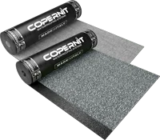
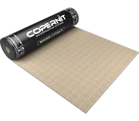
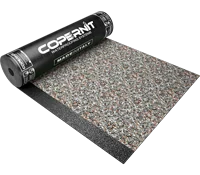
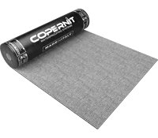

Astropol
Membrana APP -10 °C
Armatura in poliestere filo continuo stabilizzato.
Copernit produce membrane bitume-polimero per l'impermeabilizzazione a Pegognaga (MN). La gamma comprende membrane APP e SBS in diversi rivestimenti e armature, per coperture, terrazzi e fondazioni.
Una selezione delle membrane APP Copernit disponibile tramite Asfalti Mirko.

Membrana APP -10 °C
Armatura in poliestere filo continuo stabilizzato.

Membrana APP -10 °C
Doppia armatura per resistenza meccanica maggiorata.

Membrana APP -5 °C
Armatura in poliestere composito, finitura ardesiata multicolore a vista.

Membrana APP -5 °C
Armatura in velo di vetro, per applicazioni dove non serve alta resistenza meccanica.